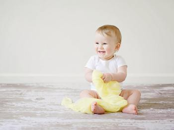

Leke; yüzeye temas eden bir maddenin, malzemenin liflerine veya dokusuna tutunarak kalıcı iz bırakmasıdır. Halılarda lekenin kalıcılığı; maddenin türüne, bekleme süresine ve yanlış temizleme yöntemlerine göre artar.
İlk müdahalede sert ovalama yerine, emici bez ile tampon uygulamak gerekir. Sıcak su bazı lekeleri sabitleyebileceği için kontrollü kullanılmalıdır. Özellikle çay, kahve, yağ ve mürekkep lekelerinde profesyonel işlem daha güvenlidir.
Halikoltukyikama olarak leke türünü analiz ederek halı tipine uygun temizlik süreci uygular, halınızın dokusunu koruyarak hijyenik sonuç elde ederiz.